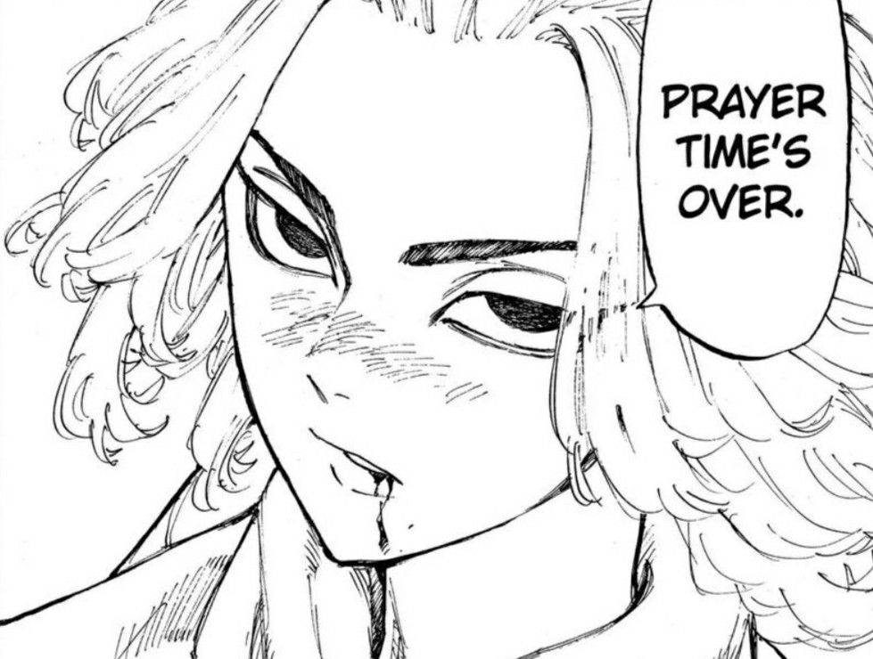
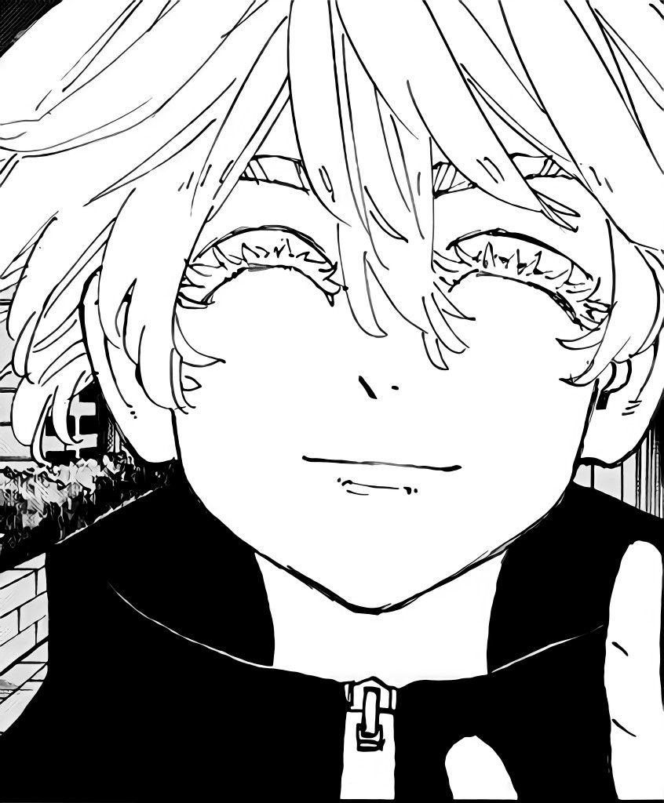
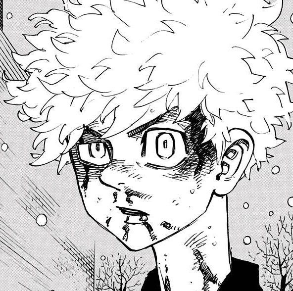
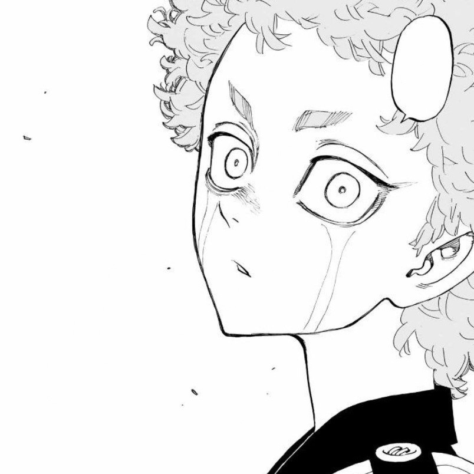
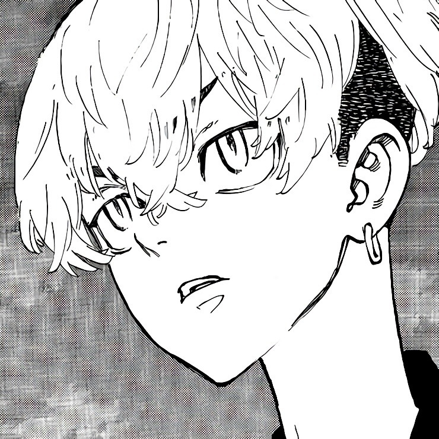

-
 1. Mikey
Mikey es reconocido como el lider de la ToMan y actualmente de la Kantou manji gang
-
 2. Senju
Senju es la actual lider de Brahman y es la primera mujer vista como lider de una pandilla
-
 3. Takemichi
Takemichi el ex lider de la primera division de ToMan y el lider de la 11va generaciond de los black dragons
-
 4. Angry
Angry, el subcapitan de la cuarta division de ToMan, pero teniendo un poder inimaginable cuando llora
-
 5. Chifuyu
Chifuyu, el camarada y mejor amigo de takemichi, el que aconseja y esta al tanto de todas las situaciones